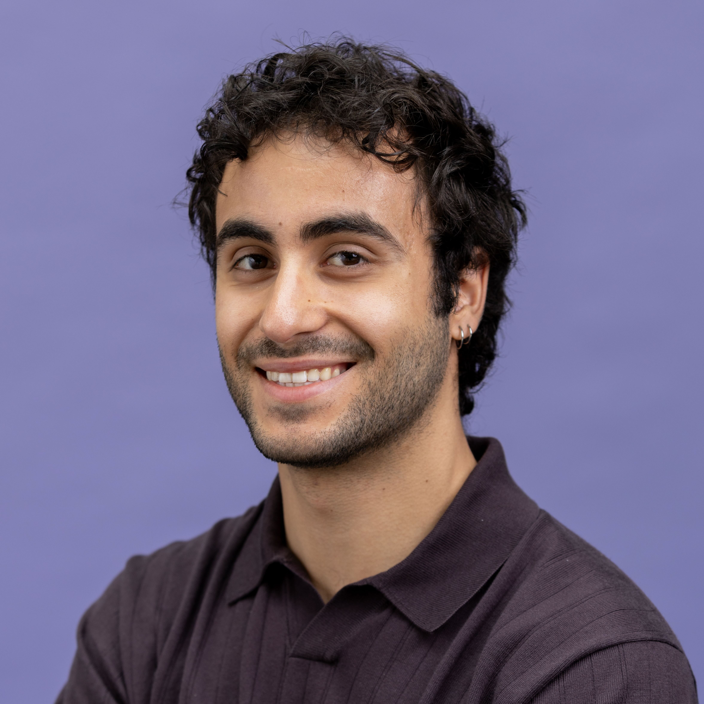

About
I am a Computer Science PhD candidate at Northeastern University, Boston. I'm interested in computer security, with a focus on Artificial Intelligence as a key element within a broader pipeline of components in software systems.
I am a member of the NDS2 Lab and I am fortunate to be under the joint supervision of Alina Oprea and Cristina Nita-Rotaru.
I have held multiple research positions in both academia and industry, most recently at Microsoft Research  and Microsoft's AI Red Team as a research intern. I have also been a researcher for the Maryland Cybersecurity Center and the Mobile Multimedia Lab.
and Microsoft's AI Red Team as a research intern. I have also been a researcher for the Maryland Cybersecurity Center and the Mobile Multimedia Lab.
News
-
Jun 2026
Our paper, "MUZZLE: Adaptive Agentic Red-Teaming of Web Agents Against Indirect Prompt Injection Attacks", was accepted to the 2026 USENIX Security Symposium! See you in Baltimore, MD!
-
Jun 2026
I joined Microsoft Research and Microsoft's AI Red Team as a Research Intern!
-
Mar 2026
I will be speaking at the New England Security Day 2026 at UMass, Amherst.
-
Aug 2025
Our paper, "SAGA: A Security Architecture for Governing AI Agentic Systems", was accepted to the 2026 Network and Distributed System Security (NDSS) Symposium! See you in San Diego, CA!
-
May 2025
I will be speaking at the Khoury Security and Privacy Day at Northeastern University, Boston.
-
Feb 2025
I will be speaking at the New England Systems Day 2025 at Northeastern University, Boston.
-
Jul 2024
Our paper; "Backdoor Attacks in Peer-to-Peer Federated Learning" was published in the ACM Transactions on Privacy and Security (TOPS) journal.
-
March 2024
I will be attending the New England Security Day 2024 at UConn, CT. Come say hi!
-
Jul 2023
I successfully completed my undergraduate studies at the Athens University of Economics and Business.
-
Mar 2023
This Fall I will be joining the NDS2 Lab at Northeastern University, Boston as a PhD student!
-
Sep 2022
Our paper; "Decentralized NFT-based Evolvable Games" was published at the 4th Conference on Blockchain Research and Applications for Innovative Networks and Services (BRAINS).
-
Aug 2022
I attended the 31st USENIX Security Symposium in Boston, MA.
-
Aug 2022
I joined Tudor Dumitraș' group for my Summer@MC2 internship on Cybersecurity at the University of Maryland, College Park.
-
Jun 2022
Received Honors for high academic performance and distinctions, awarded by the Department of Informatics, School of Information Sciences and Technology, AUEB.
-
May 2022
Awarded the HUAWEI Hellas Enterprise Fellowship for excellent performance and distinctions.
-
May 2022
Gave a speech at HUAWEI Hellas Enterprise 2022 scholarship ceremony regarding my experience in the Seeds for the Future program. [Press Release]
Contact
- office:
- 2nd floor, 216 Massachusetts Ave, Boston, MA 02115
- email:
- syros.g at northeastern.edu